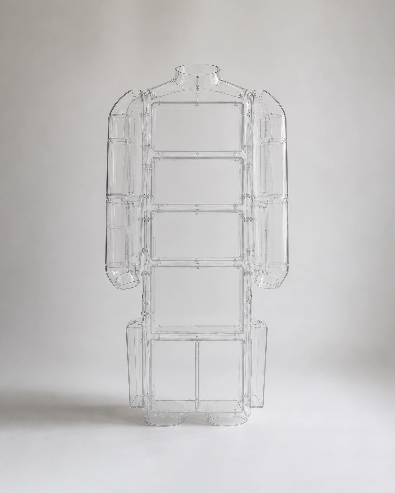

No.12 Variable Assistive Devices
Human Display Cabinet, 2048
협소한 주거 환경에서도 개인의 수집품과 애장품을 항상 시야 안에 두기 위해 개발된 신체 가변 보조 기구이다. 장치는 몸통 전면과 측면을 따라 투명한 진열 프레임을 형성한다. 물건은 더 이상 방 안에 놓이지 않고, 사용자의 몸과 함께 이동하는 전시물이 된다.
- 크기/무게
- W: 75, H: 175(cm) / 7(kg)
- 재질
- 투명 폴리카보네이트, 아크릴, 스테인리스 스틸
- 사용 목적
- 자신의 신체를 전시 공간으로 전환
- 유도 자세
-
상체를 곧게 세운 자세
몸통의 흔들림을 최소화하는 보행
진열된 물건을 보호하기 위한 완만한 움직임
충격을 줄이기 위해 팔의 움직임 제한 - 추정 환경
- 생활 공간보다 취향의 가시성을 우선시했던 환경
- 추정 사용
- 사용자는 다양한 크기의 수집품을 신체 전면에 배치한 채 장시간 생활했던 것으로 추정된다. 내부 칸막이의 간격이 서로 다른 것으로 보아, 물품의 형태에 맞추어 전시 구성을 자주 변경했던 것으로 보인다.
* 이미지에 마우스를 올려보세요.